手作杯
¥168
常规容量，200ml 左右。每一只釉色不同。
THE WORK
以下为演示素材，作品与店名均已脱敏处理。
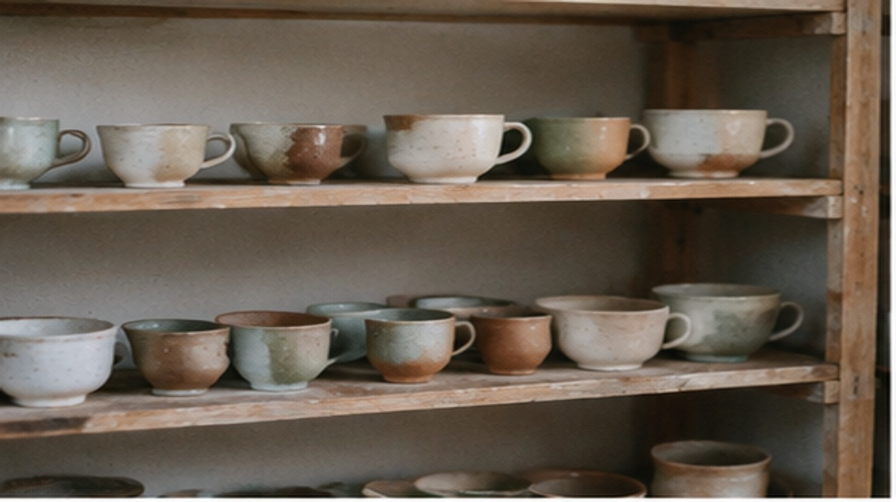
同一款做了八只，釉色各不相同
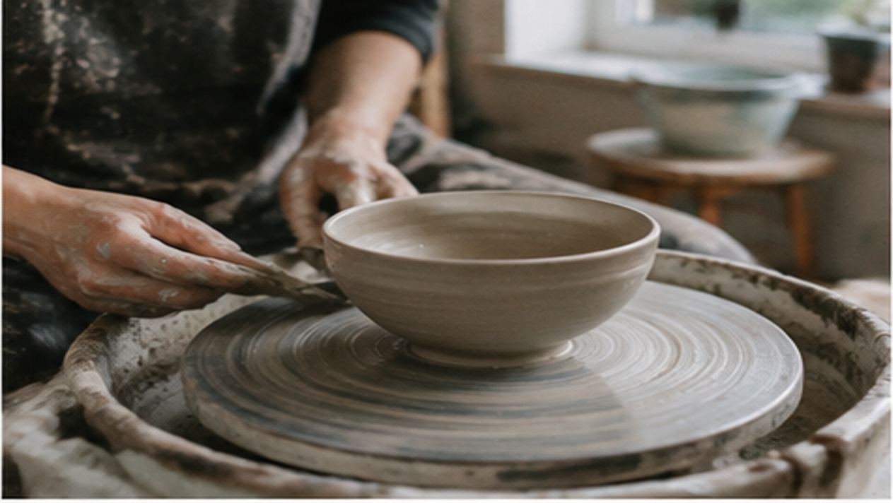
拉坯到一半，要慢下来
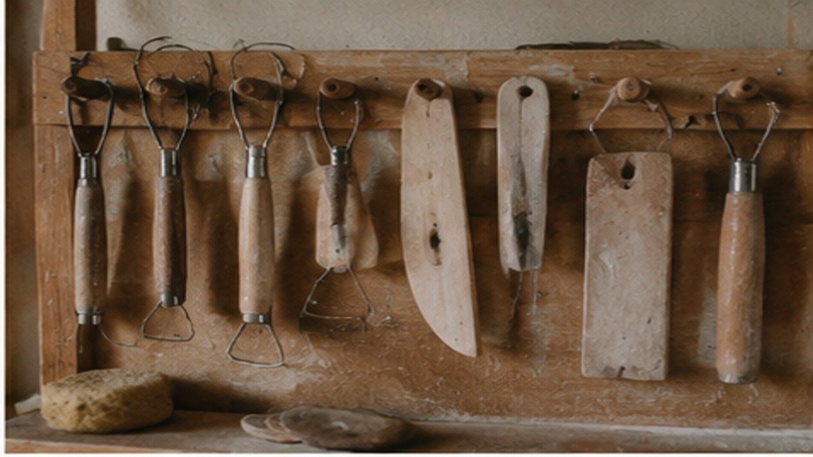
这些工具用了六年
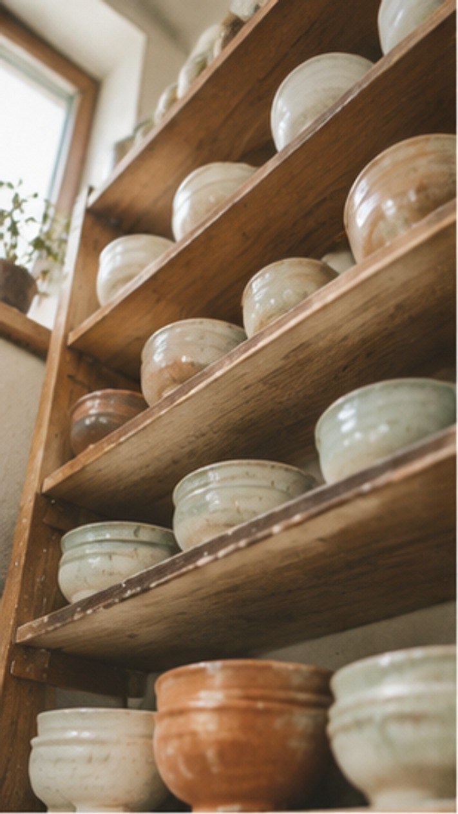
高处那层放试釉
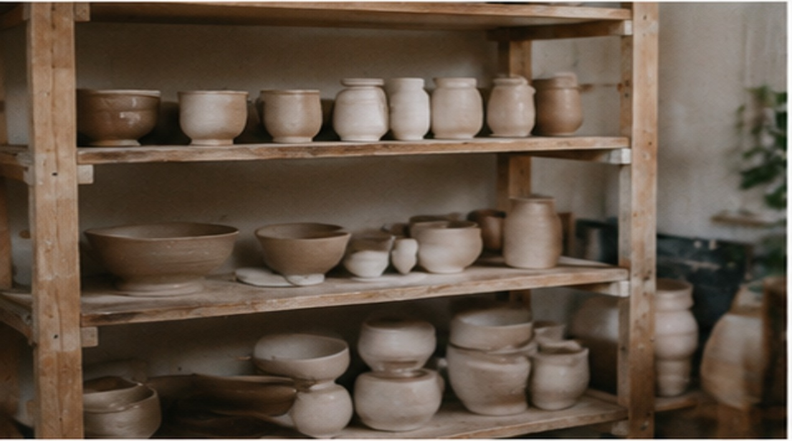
素坯状态，等干透
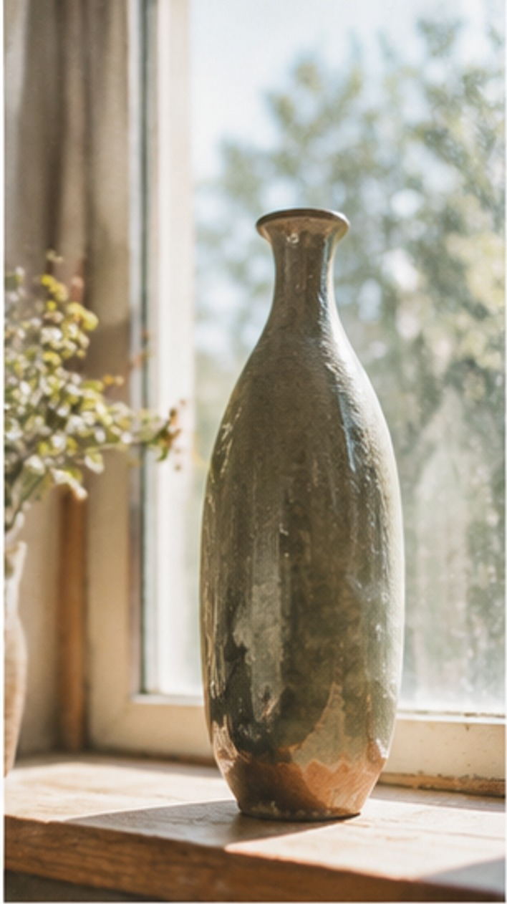
这一只拉了三次才成
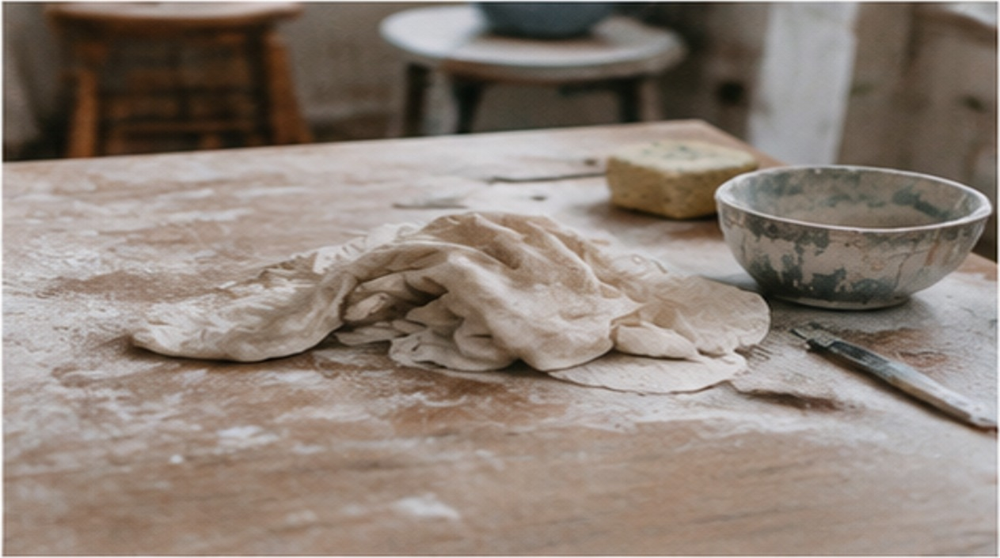
泥要保湿，干了会裂
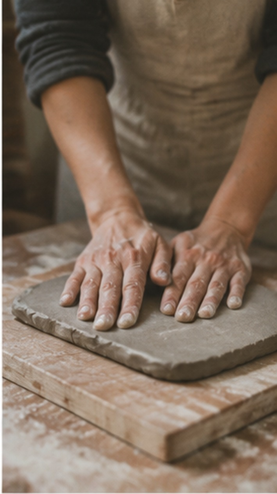
泥板要压到不冒气泡
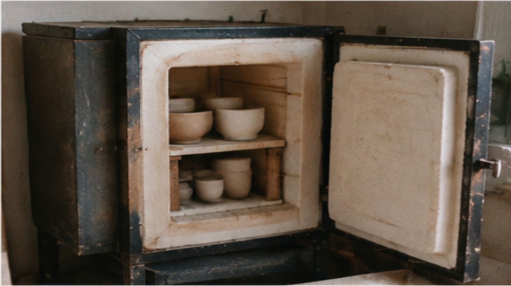
开窑那天最紧张
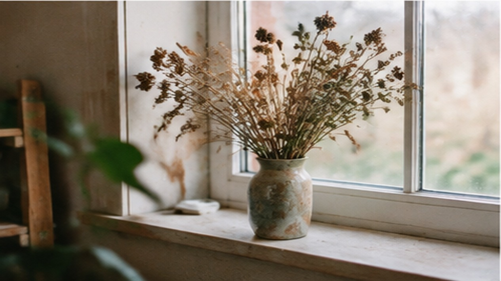
干花是隔壁花店不要的
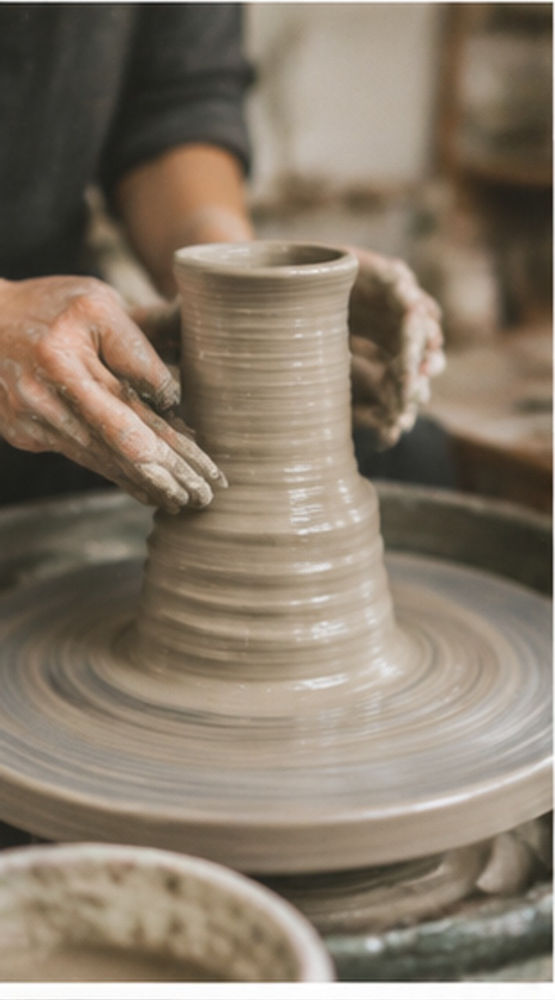
釉料自己配，比例记在本子上
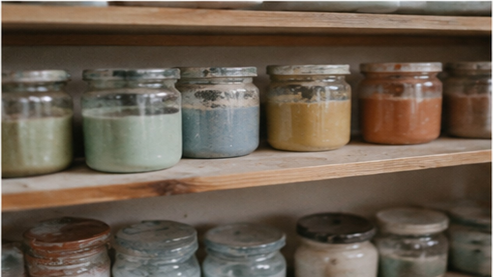
每年开窑两次，春天和秋天
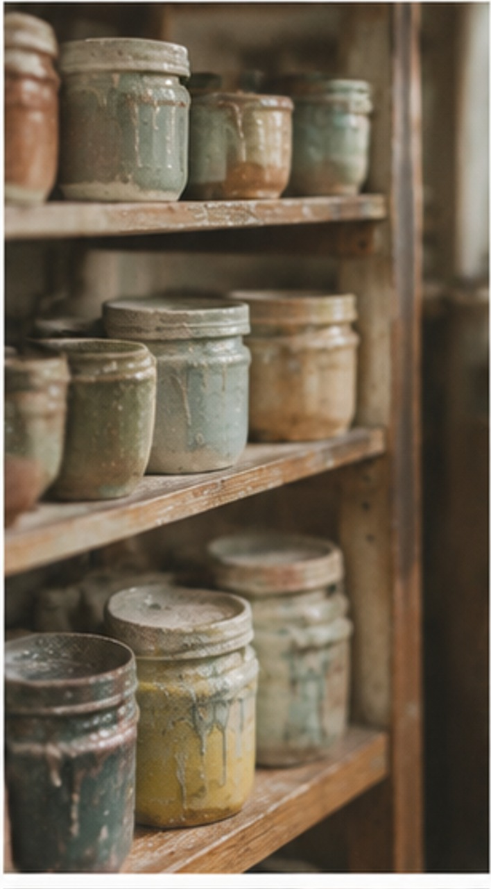
泥铲柄被手磨得发亮
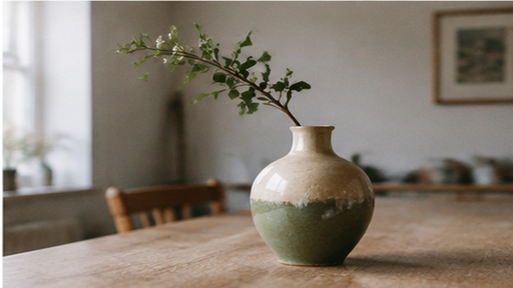
这个瓶子的口最难修
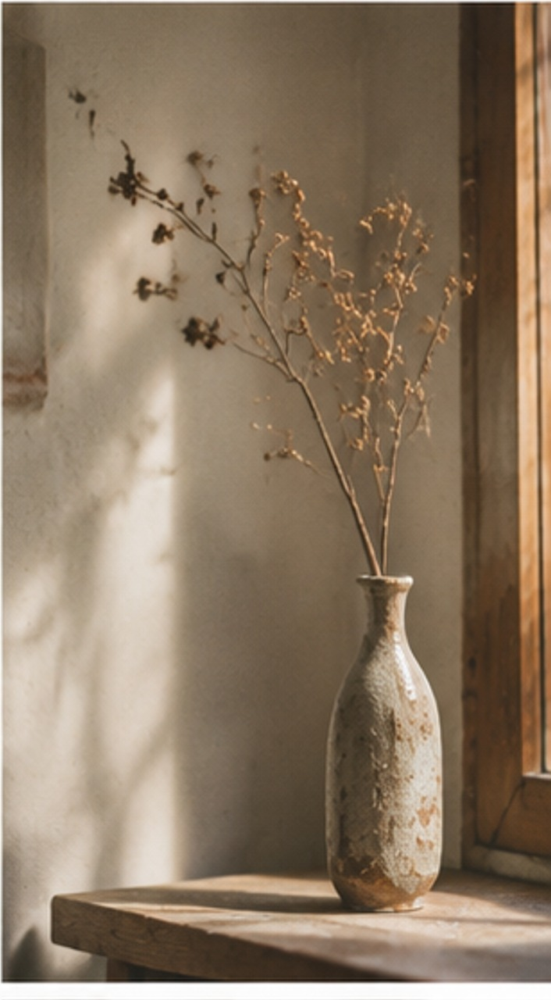
小杯系列，喝茶刚好
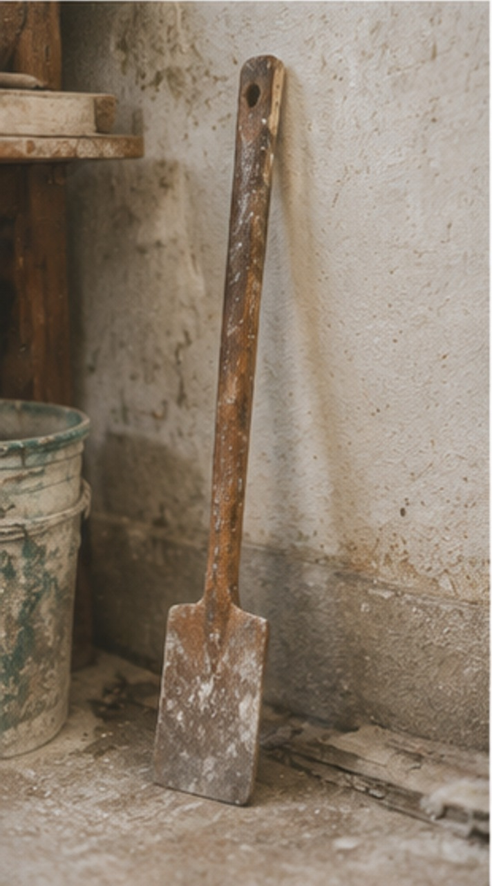
墙角常年堆着待修的坯
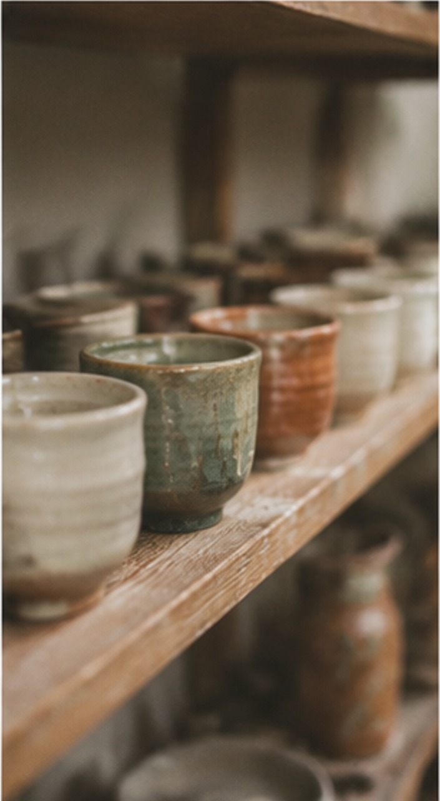
青釉那一批最容易出彩
HOW TO BUY
现货在工作室看，定制的要等排期。下面写清楚两种的区别。
¥168
常规容量，200ml 左右。每一只釉色不同。
¥198
盛汤或装零食都可以，敞口，手感偏薄。
¥268
插一支干花刚好，瓶口收得紧。
面议
改容量、改口沿、改把手位置，排期四到六周。
面议
按数量做，杯子加杯垫加盒子。
面议
会议礼、伴手礼这类，接受批量。
ABOUT
做陶第六年，从自己玩开始，后来有人问能不能买，就慢慢做成了一间工作室。
只做杯子和器皿，不做摆件和花瓶。杯子的使用频率高，做坏了就是浪费，这个标准卡住了很多想法。
每件都手拉坯，机器压出来的更规整，但我不想做那个。手上的纹路是判断做得好不好的依据。
FAQ
这是手做的必然结果，尺寸会有一点浮动，釉色更不会完全相同。介意的话建议看实物。
开窑那天可以来看。开窑时间不固定，一年就两次。
手作杯建议手洗。釉面不是玻璃，长期进洗碗机会变哑。裂了就别用了，碎片能扎嘴。
可以，底部刻字或贴印。刻字要等开窑，贴印随时可以做。
CONTACT
现货都在工作室，图片只作参考，看实物再决定。